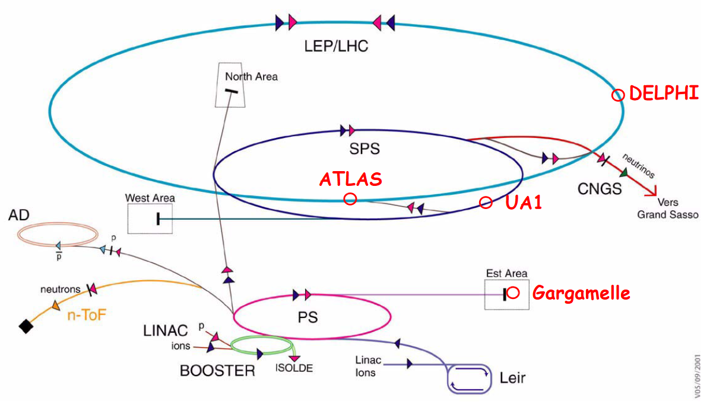
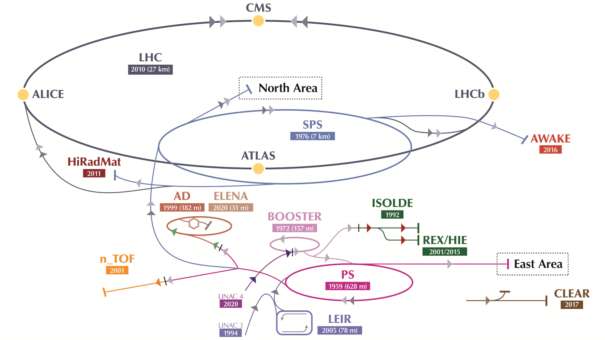
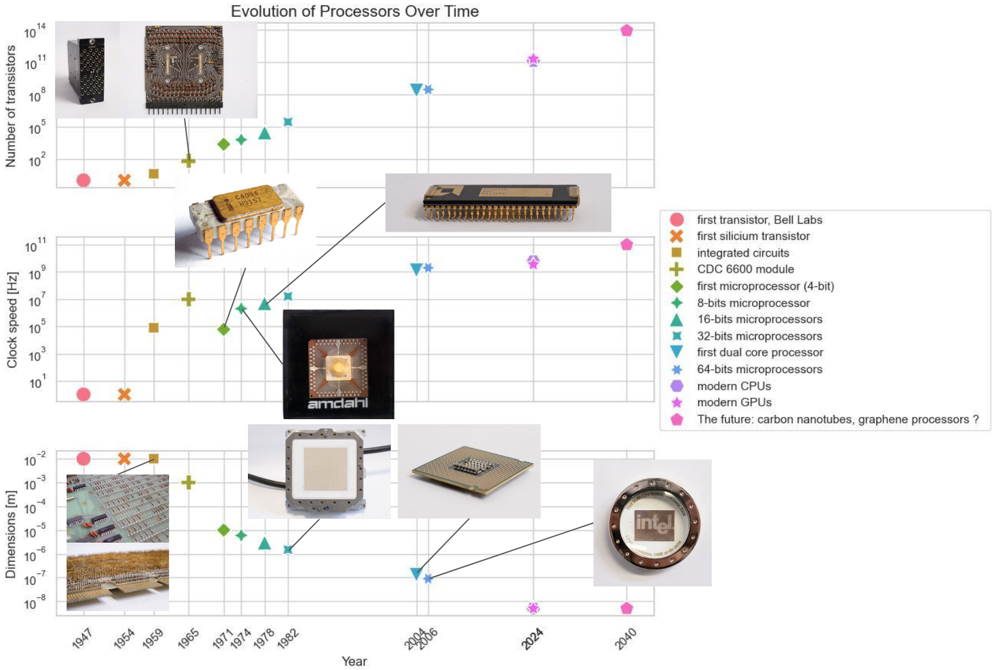
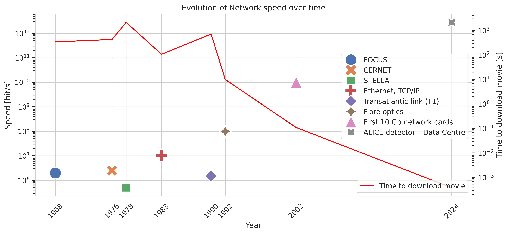

CERN accelerator complex in 2001 and in 2024


Computing
Evolution of processors

Networking
Evolution of network speed

Reproducibility of science
How do we make sure we preserve scientific discoveries?
CERN is one of the biggest scientific institutions in the world. This reputation comes with big responsibilities. Large scientific collaborations need to be able to access data and analyses from their predecessors simply.
Nowadays, all results being digital, it is crucial to have a system in place that ensures the reproducibility and sharing of scientific results throughout the years.
The Data Centre is the place where software like Zenodo, Indico and Reana are developed and maintained.
Interviews: Tibor Simko
Interview with Rene Brun
Father of ROOT analysis software.
"The software for the future is also
driven by the hardware evolution. The concept of mainframe has evolved from one processor
running multiple single-process jobs, to machines with many cores and jobs running on many
cores in parallel [...]"
What would you say is an important quality in a software developer?
I think patience, and positive attitude. Problems are never solved with negativity and complaints. I come from a farmers’ family next to Clermont-Ferrand, not a very educated one. Since I was a kid, I have worked to earn some money, even when I was very young, picking mushrooms in the woods and selling them. I believe my success comes from my “gnac”, a French slang word that means “drive, motivation, never give up”. Always pursue new ideas that you believe are going to be interesting, take risks, and be happy when others disagree. Critical discussions usually pave the way for thoughts to thrive. I find it very beautiful that in Chinese, the word “crisis” also means “opportunity”.
You are known, among other things, to be the father of ROOT, the analysis software used by thousands of scientists at CERN still nowadays. Where did the name ROOT come from?
I am a countryside man and love nature, trees and squirrels. The concept of trees and branches to describe physics data structures was already consolidated before the birth of ROOT.
When I decided to write a new software for physics analyses, I asked for my office to be moved to the Prevessin campus in order to have some piece and quiet to develop this big, important project.
When I saw trees and squirrels running on their branches outside my office window in Prevessin, I thought ROOT would be a perfect name for my baby software. I worked on it with Fons Rademakers, the son of the well-known film director.
What are teletypes and what they were used for? Why were they so handy when we talk about technology evolution?
In the 70s, physicists used to carry their code, punched on punched cards, to the computer centre where the supercomputers were, which provided the computational power to run analyses.
I still remember when a deck of punched cards got blown away by the wind, and we had to run through the vinyards to fetch the cards and reorder them all.
In 1973, a few of us purchased a teletype, which was a machine that allowed to send the code to the Data Centre through a primordial screen.
I would log in from my office - the process took around 10 minutes - and an alarm would go off in the Data Centre, activating my interactive session.
The operator in the data centre would transfer the data from tape to disk, process it and get the results. A line printer would then print a histogram, which would each take a whole page.
With the arrival of FALCO terminals in 1974, finally all users could submit jobs remotely. They only had text editors, not graphic terminals.
The first graphics terminals, instead, were the Tektronix, but the code was still running on the mainframe.
And how long would it take to get the results?
It depends, you had to tag your jobs ordering them by length, and there were always waiting times, during which we used to discuss and drink coffee.
I used to come to CERN from Clermont-Ferrand, where I did my PhD, during the weekends. I needed to come to CERN as we did not have supercomputers in my home university. I would carry a lot of paper tapes and punched cards to analyse them, and I would spend the weekend in the Data Centre, analysing data day and night. I would stay up for the whole time, and sleep on the train back. I made friends with the operators, who would allow me to inspect their screens to see which punched cards were wrong when the code didn’t compile correctly. Otherwise, usually if you wrote something badly, they would just tell you that it didn’t compile, but you wouldn’t know where the mistake was.
You said you preferred hardware to software in the beginning.
Yes, I always like to put hands on things, and was much more interested in developing chips and hardware.
Actually, I hated computers and software, I didn’t understand them.
However, in the 70s, due to the Yom Kippur War between Israel and Egypt, I was told that the American chips stopped being sent to CERN. I was supposed to work on them, but was left with nothing to do, so I started developing HBook.
What is HBook?
HBOOK was the first 1-D and 2-D histogram plotter that was enabling to plot, save and visualise the fitting of data from the ISR experiment.
HPLOT instead was used to plot lines as well, and not only scatter plots, and ZBOOK for memory management.
These are the user manuals we wrote, and one in Russian as I worked there for two years.
At the time, 50% of CERN’s workforce was Russian. HBook and HPlot came before graphic terminals and they were used in batch.
At the time of bubble chamber experiments, the HYDRA software developed by Julius Zoll, was used. With the evolution of technologies, the problem of saving data structures in memory without incurring into I/O problems became mor relevant; both ZBOOK, developed for the ISR, and HYDRA were dealing with this.
However, when the director of computing announced that only ZBOOK was going to be used, I was upset as I didn't want any competition; Julius and myself decided to merge the software into a new package that we would call ZEBRA.
When I proposed this to the head of computing, he said I was shooting myself in the foot, and told me: “If in 1 month you have not released ZEBRA, you are fired!”. We worked day and night, and we made it work.
Wow. With the arrival of graphics terminals and Apollo workstations, you also started developing PAW, and improved the collision geometry formalism with GEANT3.
Yes, Apollo workstations were revolutionary as they allowed, for the first time, to visualise results on the screen of the machine that was also running the analysis.
Moreover, they were the first example of a network of computers, on which you could run parallel computations, as they could be connected to each other. It is so obvious for us now, but it wasn’t at all at the time.
Ben Segal and myself convinced the CERN finance department to purchase some Logitech mouses - also a new concept at the time - and stated that we needed some devices to make them work - the Apollo workstations themselves,
which were so much more expensive! But they didn’t realise this, and bought some. PAW (Physics Analysis Workstation) was a data analysis system, whereas GEANT3 was the evolution from GEANT1 and GEANT2, a simulation software.
With GEANT3, we were able to generalise the geometry of different particles colliding and decaying in the detector.
How would you categorise particle physics software?
You have simulation, reconstruction and analysis.
What is the difference between online and offline computing and how did they evolve?
It is an important concept in HEP.
Online analysis is performed at the time the data is taken and filters more tha 90% of data.
The trigger itself can be considered a hardware implementation of the level-0 event selection.
The offline analysis is done afterward, on the stored data.
When did objective programming come about?
In the early 90s, with Tim Berners Lee coding the Web in objective C, a heated discussion started on moving to Objectivity (in C++, used at SLAC) from FORTRAN-based programs like ROOT. The problem is that the database logic that is pertinent to ORACLE, for example, is row-wise, and Objectivity was hardware specific, only runnin gon specific computers. ROOT, on the other hand, has an efficient column-wise way to read physics data. In the end ROOT kept existing, but we “translated” it in C++.
What about Python?
Python was introduced in the world of computing by Guido van Rossum in the 80s. We now have python interpreters for ROOT, but I am always telling young people that it is not enough to learn Python, as it is very high level. In the past, we used to have a better understanding of the hardware, and had to write the code compliant to the processors we had. For example, the PDP11 minicomputer had a 16-bit processor, the IBM a 32-bit processor, the UNIVAC a 36-bit one, the CDC6600 a 60-bit, etc… so the code needed to be adapted to the machine.
When did you first start working with artificial intelligence?
Actually, within ROOT we had many packages that were able to do multivariate analysis and develop simple neural networks, the precursors of DNNs nowadays, since the 90s. Already in 1989, a new conference series was started. Its name was meant to be “AI in HEP” (Artificial Intelligence in High Energy Physics). However, many people thought it sounded too futuristic, and it was given the - more boring - name of “ACAT” (Advanced Computing and Analysis Techniques).
And you developed them with CPUs.
Yes, GPUs came into the world of physics computing only around 10 years ago, and we now cannot think of performing calculations without them.
Other curiosities?
I used to travel to the US a lot, due to the Superconducting Super Collider (SSC) project in Waxahachie, Texas.
SSC's planned collision energy of 2 x 20 = 40 TeV around a 87 km ring was roughly three times that of the 2 x 6.8 = 13.6 TeV around the 27 km ring of the LEP (same tunnel and dimension of today’s LHC).
However, in 1993 after 2 billion dollars had already been spent on it, the American government decided to stop the SSC project. One of the several reasons why the Americans abandoned the project - most of them being economical reasons -
was that engineers at LEP (the CERN experiment at the time)
found out that the Moon tidal force was moving the magnets of the accelerators by 1 mm.
The problem was solved by placing a tunnel crossing the LEP circumference to send very fast signals from one part to the other. The Americans realised this would have been too complicated and expensive.
09.04.2024
Interview with Ben Segal
“Unix and Internet evangelist” - Tim Berners Lee
What was the main challenge of accepting TCP/IP protocols at CERN and why were people against it? Why was there so much resistance against TCP/IP in the beginning - and it was allowed only within CERN’s domain?
Fear of an economic threat from the USA, particularly by European and other PTT monopolies.
Fear of disruption: this simple cheap technology replacing the diverse and expensive proprietary alternatives.
Fear that CERN had no mandate to work in this sensitive techno/political domain.
What did the STELLA project - that you managed- involved in the late 1970’s and early 80’s?
It was a pre-Internet project trying to broadcast CERN data at high speed to partner labs via satellites.
Almost all the required development had to be done by the partners themselves (5 physics laboratories).
What is MOSAIC and what is its novelty?
The Web browser from Tim was running only on NeXT boxes, while MOSAIC ported it to personal IBM PCs and Unix machines. This made it accessible to a much wider public. MOSAIC became Netscape, then Firefox.
How did you build a file-exchange gateway, in 1983, between the Apollo workstations and the homegrown CERNET network, which was at the time sufficient to exchange data and program files with the central CERN mainframes and other CERNET hosts?
This was achieved by a collaboration between myself on the Apollo side and a colleague (Fabio Fabiani) who had developed a hardware gateway box allowing Ethernet hosts to connect to remote CERNET File Managers.
Why was PC networking and IBM networking via TCP/IP ignored in the beginning?
Neither were CERN IT priorities. Both IBM PC’s and the IBM mainframes only communicated with proprietary protocols. The only mainframe computer to have TCP/IP on it was the CRAY (and some other Unix machines).
The CERN Internet Exchange Point, CIXP, is the first European Internet hub ever existed. When was it installed, after the transition to IP protocols?
Officially, it was installed in 1996, after some informal connections had been made starting in 1991/92.
Can you tell me a bit more about emulators and how/why CERN built them?
They were built in the early 1980’s mainly because the standard (IBM 370 series) mainframe machines were too expensive to acquire enough capacity. They allowed fast execution of CERN offline and online IBM applications.
When Unix systems became the standard they revolutionised the world of computing. What was there before, apart from the CRAY’s COS propriety operating system?
It was chaos! IBM, CRAY, Digital Equipment and a mass of other manufacturers, all with their own proprietary OS’s. They also had their own hardware, machine languages, data representations, etc, etc. UNIX was very revolutionary.
When you first bought the CISCO router’s IP filtering system, you write that you were impressed by it. What excited you, what was its novelty?
In 1987, when I first met the Cisco co-founder at an exhibition in the USA, the idea of a dedicated box for IP routing was very new. Before that, routing was usually done in some of the host computers themselves, and was slow. The Cisco box’s extra ability to filter the communications was extremely useful for security. So I bought two boxes for protecting the new CRAY machine at CERN.
Before the whole of CERN converted to IP standards, CERN was using Class A addressing, with a single network (Network 100), chosen by you. Nowadays, you say that this is almost illegal. Why is this?
On the “real” Internet one has to obtain official IP numbers for all your networks from a central authority, but on an internal network with no real Internet connections you can assign any numbers you like. So between 1984 and the end of 1988 I personally issued and managed CERN’s IP numbering and all systems were on a single network, number 100 (the first number that came to my mind). This happens to be a Class A number.
There are three classes of IP (v4) network addresses, A, B and C. The Class A networks are special, used for very large or historically important organisations. Class B are suitable for medium sized organisations like CERN, and Class C are used for small or domestic networks.
It is nowadays very hard to obtain even class B networks, but in 1988 we easily obtained two (and later two more) Class B’s for CERN. We had to renumber everything before we connected to the real Internet.
In 1987, why did you meet with Daniel Karrenberg, from the Mathematical Centre in Amsterdam.
Yes, the Mathematical Center hosted “mcvax”, the European gateway of the USEnet system which supported email and bulletin boards for all Unix systems world wide.
Daniel was looking for IP routers able to connect lines running over the European-favoured X.25 networks. His plan was to migrate the USEnet network from its confining network protocol “uucp” to TCP/IP, thus allowing connection to the whole Internet. I suggested he used CISCO routers. This allowed USEnet’s IP migration, without alerting the PTT’s. It was the first major step towards the European Internet, and to its governing body RIPE, first run by Daniel.
Are NeXT machines an unmissable component of the exhibition on the history of the data centre?
Of course, Tim had a beautiful machine and that's where he first developed the web.
Do you have other fun weird details about Tim Berners Lee?
His speech seemed nervous and was halting a lot, probably because he was hyperthreading and thinking about many things at once. He was difficult for many people to follow. Apart from being a visionary, he was also an excellent implementor, very persistent, and a master of making choices between many rival standards.
Is SHIFT - Scalable Heterogeneous Integrated Facility- worth including in the exhibition?
Yes, very much so! SHIFT marked the transition of high performance physics computing from the use of supercomputers - and mainframe computers in general - to using scalable networks of powerful workstations, the first example of heterogeneous distributed computing. This led directly to CERN’s Grid projects (WLCG) and to today’s cloud computing.
14.02.2024
Books
Want to know more?
"How the Web Was Born: The Story of the World Wide Web" - James Gillies and Robert Cailliau
"Weaving the Web: The Original Design and Ultimate Destiny of the World Wide Web" - Tim Berners Lee
"From the Web to the Grid and Beyond" - René Brun, Federico Carminati and Giuliana Galli Carminati
"The Hidden Prehistory of European Research Networking” - Olivier Martin
"Technology Meets Research - 60 Years of CERN Technology: Selected Highlights" - Christian Fabjan, Thomas Taylor, Daniel Treille and Horst Wenninger